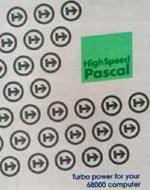

High Speed Pascal
HSPascal History
HSPascal started
in 1990 supporting the Atari and Amiga computers. HSPascal was sold under the names
Have a look at the Amiga
version from HiSoft or search AltaVista
/ Yahoo
/ google
for reviews etc. |
 |